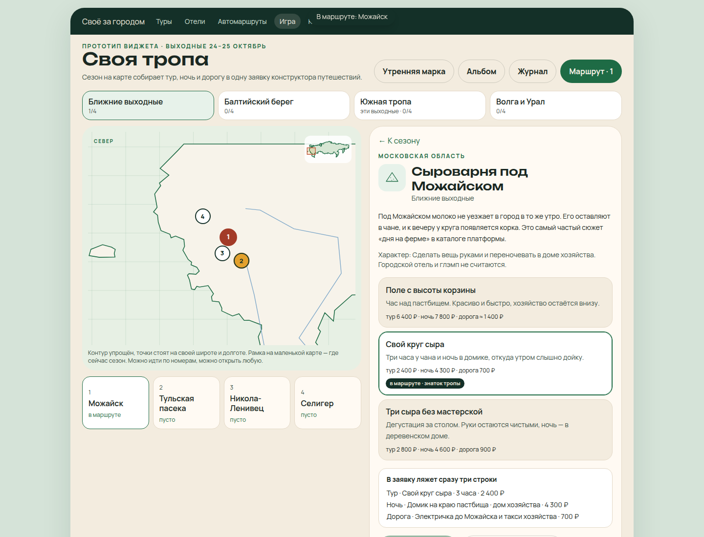
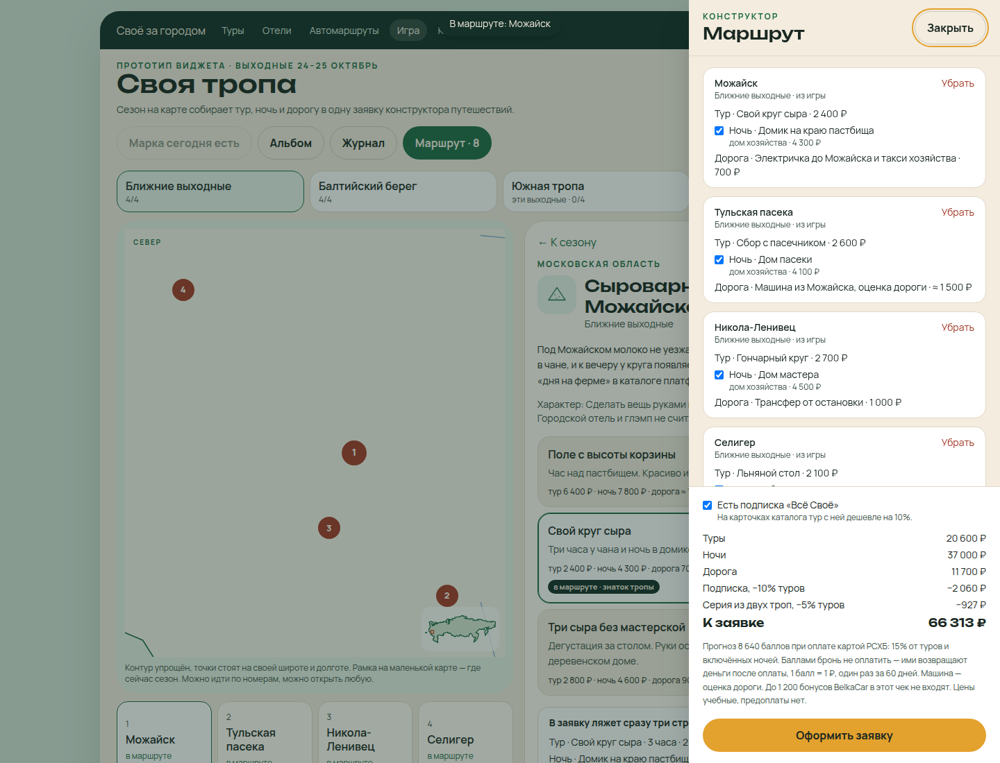
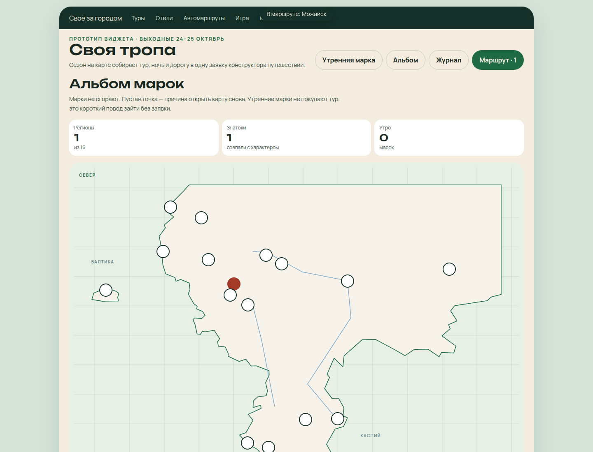
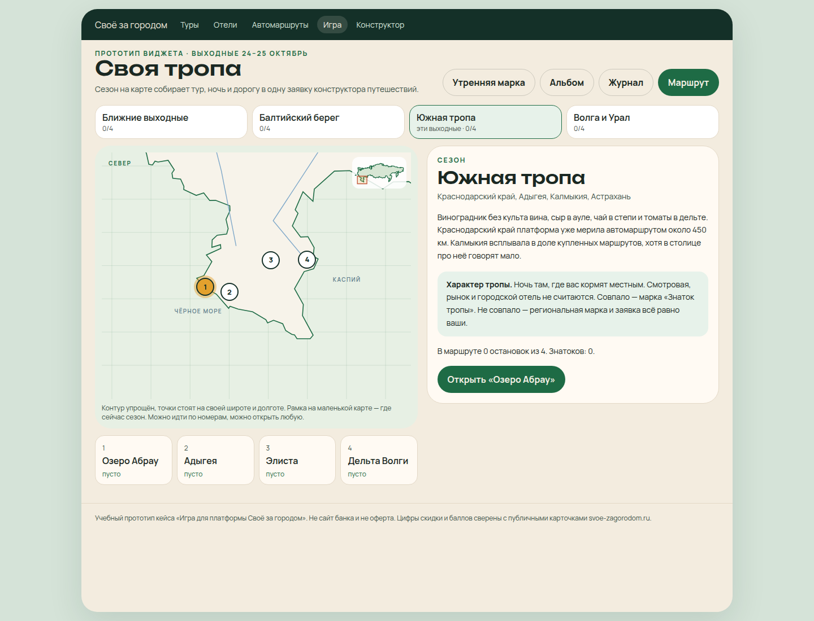
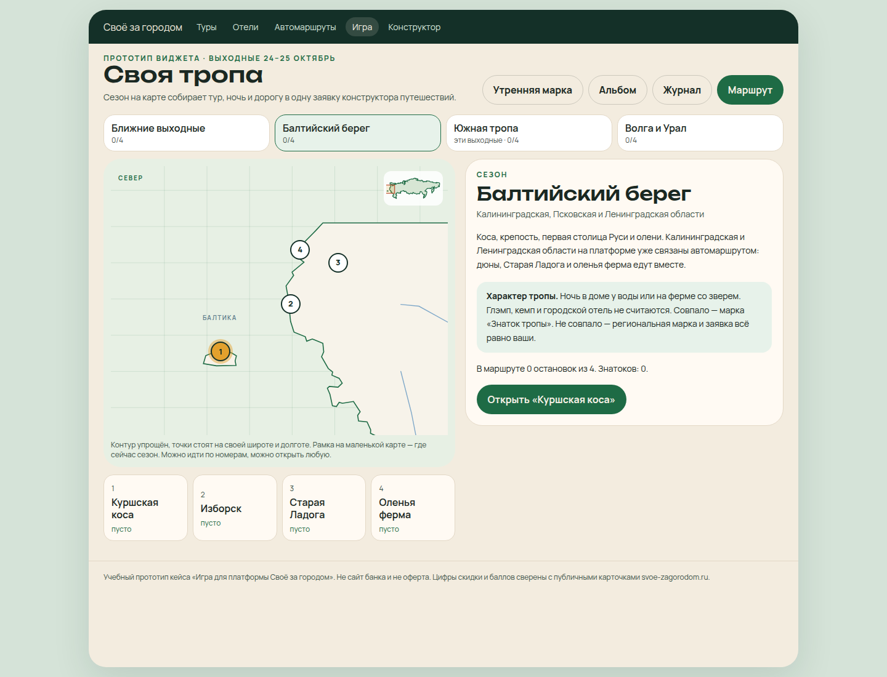
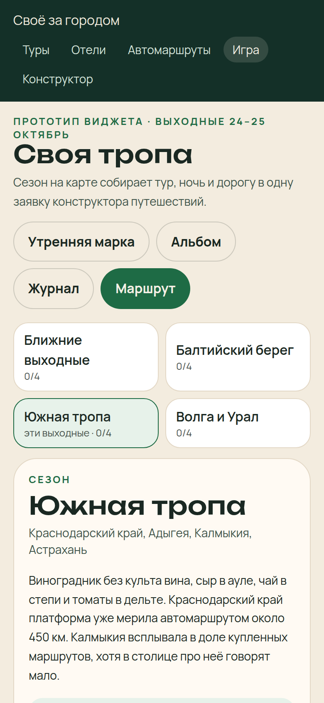

Задача 3 · Своё за городом
Игра о путешествиях по России, которая встраивается в платформу и собирает поездку из того, что платформа уже продаёт: тур, ночь и дорогу.
Это файл для поля «Решение кейсового задания». Играбельный прототип — отдельная ссылка: его можно открыть в браузере, пройти остановку и отправить учебную заявку.
Стипендиальная программа РСХБ 2026–2027. Прототип не является сайтом банка и не офертой. Цены учебные. Скидка 10% и доля баллов 15% сверены с публичными карточками svoe-zagorodom.ru.
Нужно придумать игру о путешествиях по России, встроить её в «Своё за городом» и связать с картой, маршрутами, отелями или транспортом. В решении должны быть цель, правила, сценарии, связь с поездкой и бронированием, MVP и то, почему человек вернётся планировать поездку.
Викторины на платформе уже есть. Новая викторина эту задачу не закрывает. «Своя тропа» не спрашивает столицу региона. Она за несколько минут собирает заявку в конструктор путешествий.
Довести человека от «хочу за город» до заявки на конкретные хозяйства и оставить причину вернуться, даже если сегодня он ничего не бронирует.
| Сезон | Где | Характер |
|---|---|---|
| Ближние выходные | Можайск, тульская пасека, Никола-Ленивец, Селигер | Сделать вещь руками и ночевать в доме хозяйства |
| Балтийский берег | Куршская коса, Изборск, Старая Ладога, оленья ферма | Ночь у воды или на ферме со зверем |
| Южная тропа | Абрау, Адыгея, Элиста, дельта Волги | Ночь там, где кормят местным |
| Волга и Урал | Ярославский лён, ивановская набойка, подворье под Казанью, Сысерть | Увезти вещь, сделанную руками, и ночевать у мастера |
В бою новый сезон открывался бы к выходным. В прототипе открыты все четыре, иначе сценарии нельзя посмотреть за один заход. Бейдж «эти выходные» показывает актуальный.
Каталог, карточка тура, страница ночей и страница дороги пишут в один маршрут. В конструкторе видно, откуда пришла строка: из игры, из каталога, со страницы ночей или дороги.

На остановке человек видит тур, ночь и дорогу до нажатия «В маршрут». Точка на карте стоит на широте и долготе места. Контур России упрощён.
Ниже две собранные тропы. Подписка снимает 10% с туров, серия — ещё 5% с остатка. Прогноз баллов считается как 15% от туров и включённых ночей до скидок: 8 640 при турах 20 600 и ночах 37 000. К заявке 66 313 ₽. Баллами эту сумму не платят.

После заявки предоплаты нет. В прототипе никто не перезванивает. На платформе специалист уточнил бы даты и мог убрать лишнюю экскурсию.

Окно сезона шире, чем четыре точки, чтобы был виден берег. Маленькая карта в углу показывает, где это на стране.


На узком экране сезоны и сцена остановки идут выше карты. Шапка платформы не обрезает разделы.
